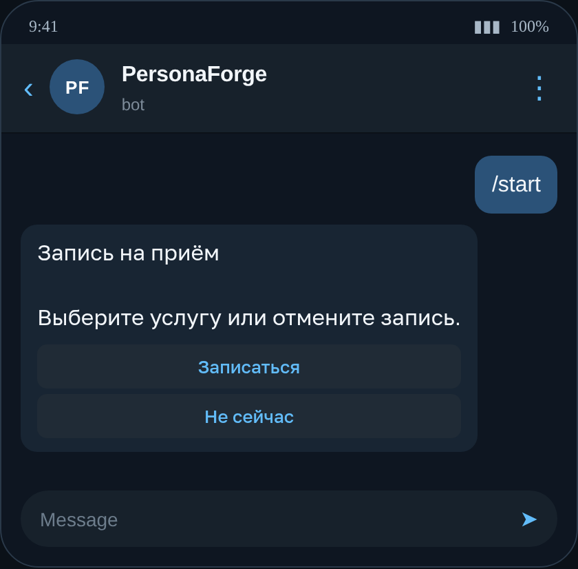
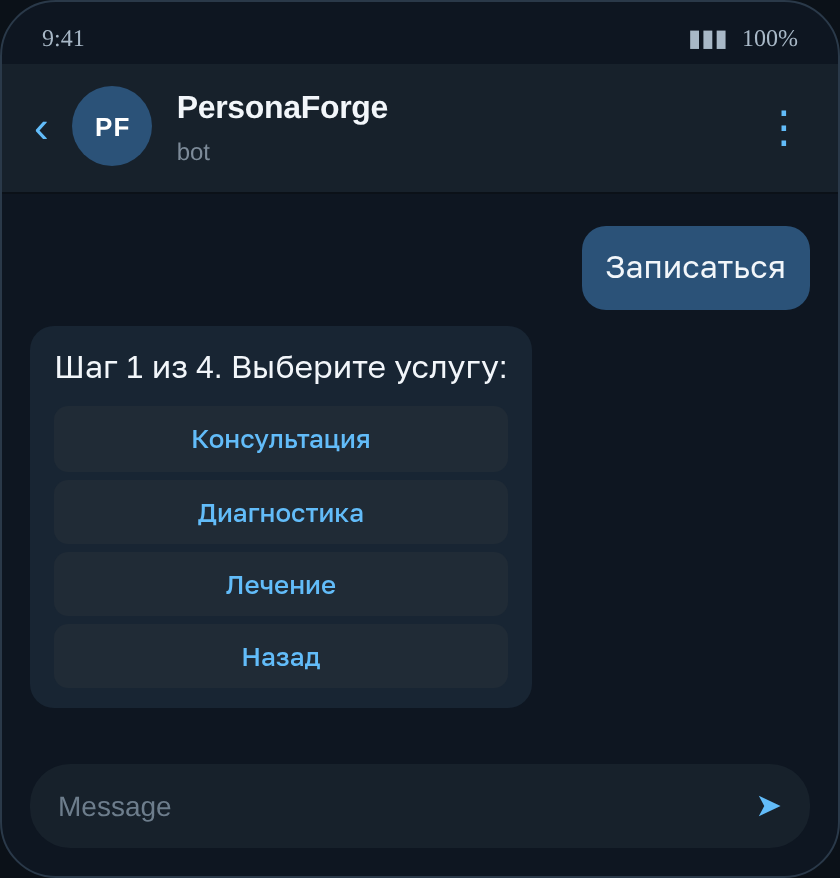
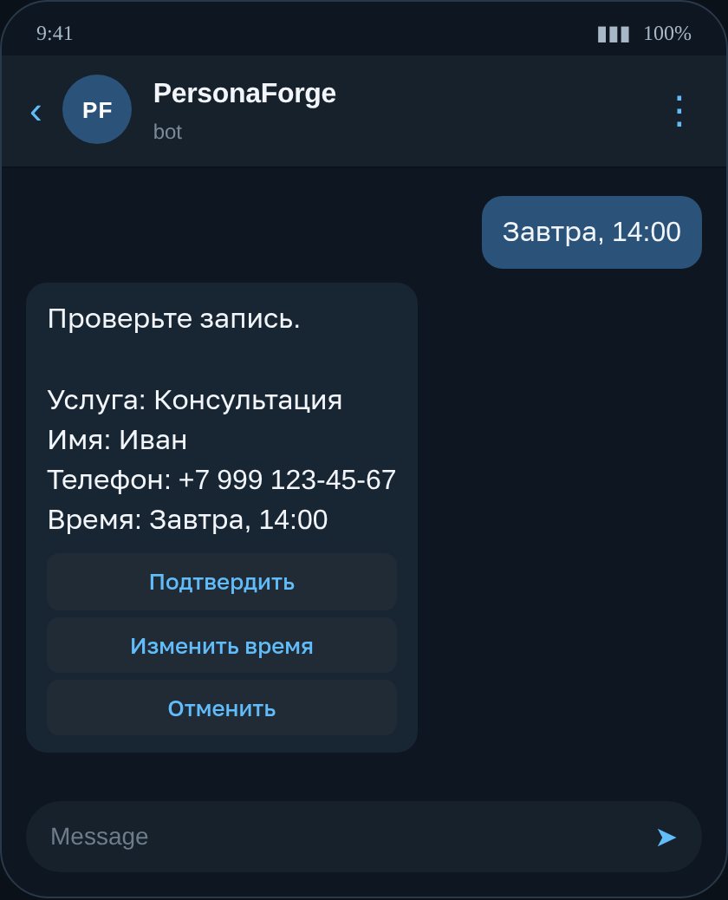
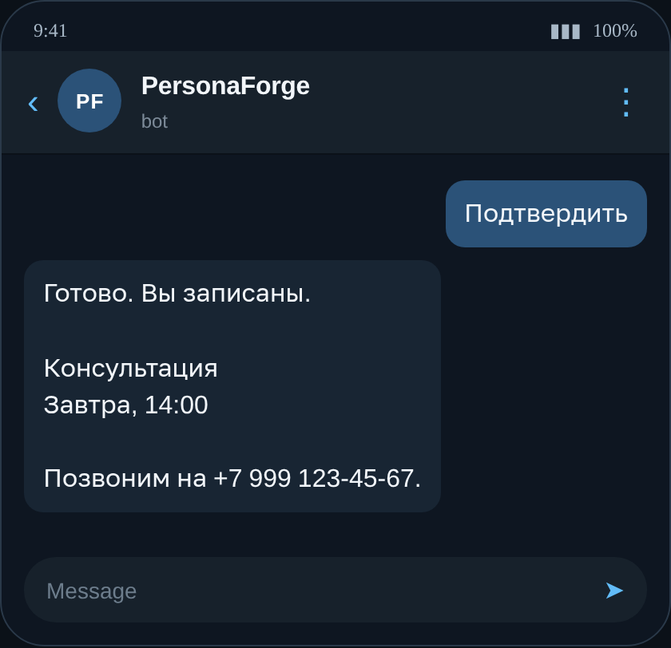

Диалог
$ bun run demo
Запись на приём Выберите услугу или отмените запись.
Записаться
Шаг 1 из 4. Выберите услугу: Консультация · Диагностика · Лечение
Консультация
→ имя → телефон → время
Проверьте запись. Услуга: Консультация Имя: Иван Телефон: +7 999 123-45-67 Время: Завтра, 14:00
Подтвердить
Готово. Вы записаны. Консультация Завтра, 14:00
Экраны




Контекст
Вырос из квалификатора лидов для разработки ботов: сначала bot-dev-lead-bot, затем dlg-ngind с JTBD-сценарием. Бизнес-задача была драйвером, а движок выделялся постепенно. PersonaForge — очищенная экспериментальная версия ядра; рабочее приложение на нём — JTBD Lead Qualifier. Более развитая ветка этого направления — Bot Machine: low-code фреймворк для Telegram-ботов.
Что умеет
- Бот — это FSM, ViewMap и форма, а не набор обработчиков.
- Восемь инвариантов проверяют сценарий до запуска.
- Переходы с assign из payload, формы или литерала.
- Мультивыбор через add и условные переходы.
- Форма: string, number, boolean, array, object, defaults, required.
- Вложенные шаблоны вроде {{estimate.price}}.
- Три бота-примера: запись, FAQ и меню ресторана.
- Рендер в текст, кнопки и Telegram inline-клавиатуру.
- 52 теста, включая полный сценарий записи.
Как устроено
src/
├── domain/
│ ├── fsm.ts
│ ├── view-map.ts
│ ├── form.ts
│ ├── bot-persona.ts
│ └── conversation.ts
├── application/
│ ├── engine.ts
│ ├── use-cases.ts
│ └── ports.ts
├── rendering/
│ ├── render.ts
│ └── telegram.ts
├── examples/
│ ├── appointment-bot.ts
│ ├── faq-bot.ts
│ └── restaurant-bot.ts
└── demo/
└── appointment.tsЧто реально, а что mock
Ниже — фактическое состояние проекта. Всё, что помечено как mock или отсутствует, не выдаётся за готовую функцию.
| Пункт | Состояние |
|---|---|
| Транспорт | ограничение только payload, без polling и webhook |
| Хранилище | ограничение in-memory, без базы |
| Типы формы | ограничение runtime-валидация, не compile-time |
| Компоненты | ограничение только текст и кнопки |
| Локализация | нет нет, тексты в определениях |
| Аналитика | нет нет воронки и метрик |
Запуск
# переменные не нужныbun install
bun test
bun run demoЧто дальше
- Вынести Telegram-адаптер из приложения в движок.
- Postgres/Redis для определений и диалогов.
- Компоненты: фото, документ, геолокация.
- Локализация через каталог текстов.
- Проверка обязательных полей перед финальным переходом.
- Версионирование персон и миграции активных диалогов.